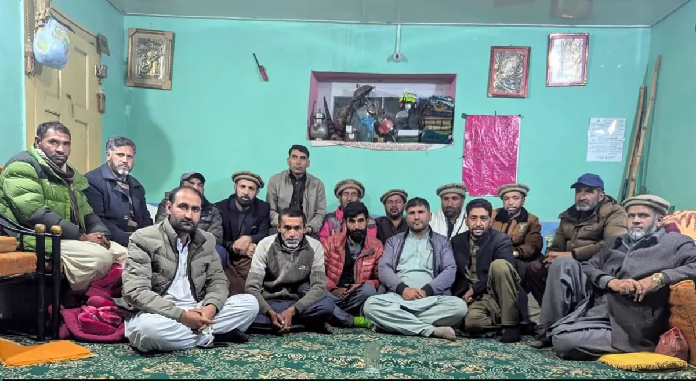

When the Educated Serve Their Village, Its Thinking Changes
جب پڑھا لکھا شخص اپنے گاؤں کے لیے کام کرتا ہے، تو گاؤں کی سوچ بدل جاتی ہے
23 November 2026 · Tallu Broq Ki Awaaz

جب پڑھا لکھا شخص اپنے گاؤں کے لیے کام کرتا ہے، تو گاؤں صرف ترقی نہیں کرتا، اس کی سوچ بدل جاتی ہے۔
گاؤں کو صرف سڑکوں اور عمارتوں کی ضرورت نہیں، اسے اچھی سوچ، اچھی تعلیم اور اچھے رہنما کی ضرورت ہے۔
اصل کامیابی کیا ہے؟
اور یہ کام ہماری نئی نسل کو کرنا ہوگا۔ صرف شہر جا کر کامیاب ہونا کامیابی نہیں ہے، اصل کامیابی یہ ہے کہ اپنی تعلیم واپس اپنے گاؤں لے کر آؤ، اپنے گاؤں کے بچوں کو پڑھاؤ، ان کو موقع دو، ان کو آگے بڑھنے کا راستہ دکھاؤ۔
اگر ہر پڑھا لکھا نوجوان اپنے گاؤں کے لیے تھوڑا سا وقت نکال لے، تو کوئی گاؤں پیچھے نہیں رہے گا۔
اپنے گاؤں کو مت بھولو، اپنے گاؤں کو آگے لے کر چلو۔
In English
When an educated person works for their village, the village does not merely develop — its thinking changes.
A village does not only need roads and buildings. It needs good thinking, good education and good guides.
What is real success?
And this is the task our new generation must take up. Going to the city and succeeding there is not the whole of success. Real success is this: bring your education back to your village, teach your village's children, give them opportunity, and show them the path forward.
If every educated young person gave even a little time to their village, no village would be left behind.
Do not forget your village — carry your village forward.